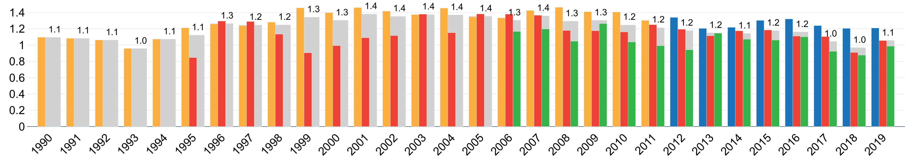

Introduction to VIS30K:


Average # of images (figures and tables) per page, by year.
What image (figure and table) data can you find here?
Images from the IEEE VIS conference:- VAST: 2006-2019
- InfoVis: 2004-2019
- Vis: 1990-2013
- SciVis: 2014-2019
What are the image data?
We collected the VIS30K dataset, a new collection of 29,635 images including every figure and table for 30 years spanning each track of the IEEE Visualization conference series (Vis, SciVis, InfoVis, and VAST).What image extraction methods we designed?
We combine CNN-based figure extraction and human curation.Our models combine F-RCNN and YOLOv3 and you can try it here.